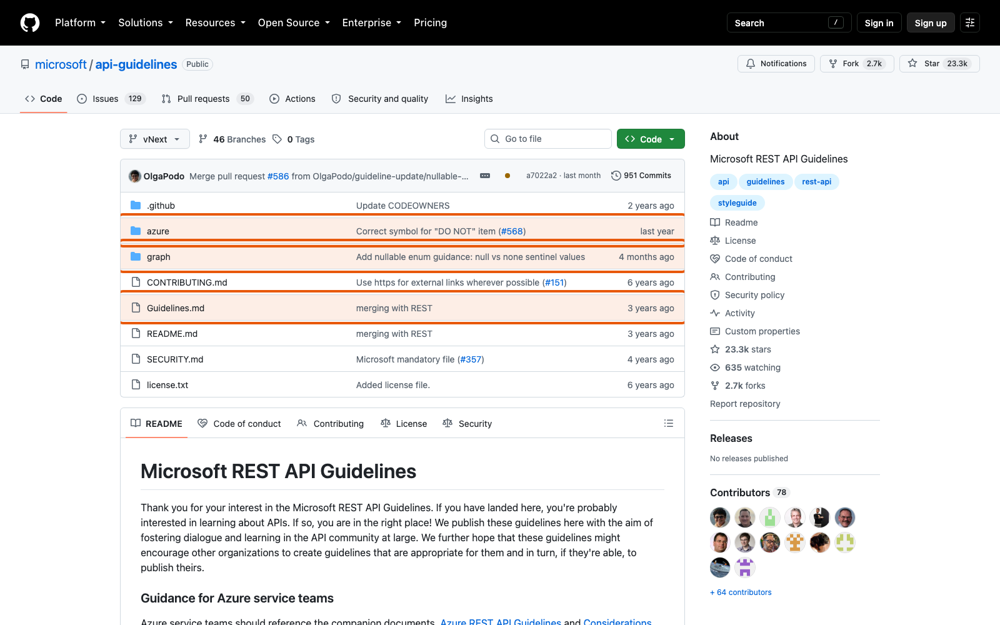
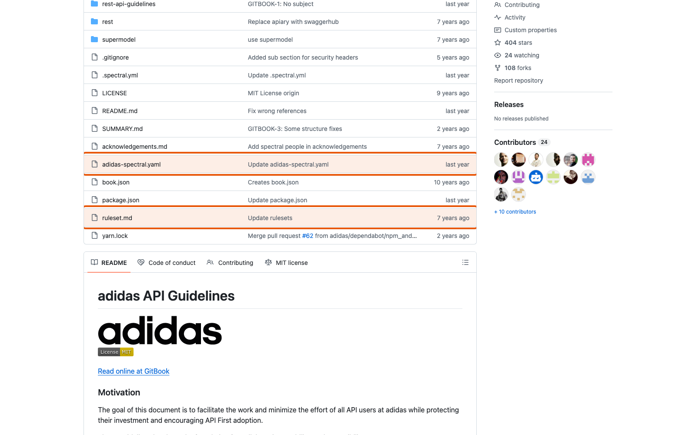

Справочник «Стандартизация HTTP API» · модуль 7 · Репозиторий API
Глава 7.4
Стандарты
компаний
Всю дорогу мы ссылались на чужие своды правил: Zalando, Microsoft, GitHub, adidas, DigitalOcean, Box. Пора посмотреть на них разом — что у них общего, где они расходятся и как этим пользоваться, когда нужно принять решение в своём проекте.
- Категория
- Репозиторий
- Уровень
- Базовый
- Связанные главы
- 6.1 API Style Guide · 5.2 Breaking changes · 5.1 Четыре номера
- Зачем это знать
- Чтобы обосновывать решения ссылкой, а не мнением
§1Пять сводов и чем они отличаются
| Свод | Объём | Форма | Чем полезен |
|---|---|---|---|
| Zalando | Очень большой | Пронумерованные правила с уровнями | Готовый ответ почти на любой вопрос и номер для ссылки |
| Microsoft | Большой | Отдельные документы для Azure и Graph | Видно, как расходятся решения внутри одной компании |
| adidas | Небольшой | Связанные разделы в Markdown | Образец свода для команды, которой не нужен том |
| DigitalOcean | Средний | Набор правил линтера | Стандарт в исполняемом виде |
| Box | Средний | Репозиторий описания с правилами вокруг него | Видно устройство репозитория публичного API целиком |


§2Где все сходятся
Есть решения, которые совпадают у всех. Это и есть настоящая «общепринятая практика» — и отступать от неё стоит, только имея очень вескую причину.
/getTickets.единогласно200 не возвращается вместо 201 или 404, ошибка не прячется в теле успешного ответа.единогласно§3Где расходятся
| Вопрос | Варианты | Где разбирали |
|---|---|---|
| Где указывать версию | Путь (Graph) · заголовок (GitHub) · параметр запроса (Azure) · имя файла (Box) | глава 5.1 |
| Новое поле в ответе | Совместимо (GitHub) · несовместимо (Azure) | глава 5.2 |
| Формат ошибки | Problem Details (Zalando) · своя структура плюс заголовок (Azure) · своя структура со ссылкой (GitHub) | глава 4.1 |
Единица в X-RateLimit-Reset | Секунды до сброса (Zalando) · момент времени UTC epoch (GitHub) | глава 4.3 |
| Идентификатор запроса | X-Flow-ID (Zalando) · x-ms-client-request-id (Azure) · X-Request-Id (распространённый) | глава 4.3 |
Идемпотентность POST | MAY (Zalando) · обязательна на практике (Stripe) · не описана у многих | глава 4.3 |
Шесть строк — и в каждой несколько правильных ответов. Именно поэтому фраза «сделай по стандарту» сама по себе не задание: сначала нужно выбрать, по какому.
§4Как выбирать между вариантами
- Посмотрите, кто ваши клиенты. Это решает больше всего: у публичного API и у трёх внутренних сервисов разные ответы почти на все спорные вопросы.
- Возьмите вариант, который дешевле поддерживать. Версия в пути видна в журналах; версия в заголовке не засоряет адреса. Любой выбор здесь — компромисс.
- Проверьте, чем будете проверять. Правило, которое нечем проверить, работать не будет — как бы солидно ни выглядел его источник.
- Запишите решение и отвергнутые варианты. ADR из главы 5.4. Через год вопрос зададут снова.
- Не смешивайте варианты в одном API. Часть операций с версией в пути, часть в заголовке — худший из возможных исходов.
§5Как ссылаться на источник
Ссылка на правило в своём стандарте должна выдержать два испытания: её можно открыть, и открывший увидит именно то, о чём речь.
- «как принято в индустрии»
- «см. документацию Zalando»
- ссылка на главную страницу свода
- пересказ своими словами без цитаты
- Zalando, правило 176 «MUST support problem JSON»
- адрес с якорем на конкретное правило
- цитата в оригинале
- перевод под цитатой
Этому же правилу подчинён весь справочник: где приводится требование стандарта, рядом стоит английский оригинал, перевод и адрес источника. Не из педантизма — из практики: правило без проверяемого источника рано или поздно объявят выдумкой автора.
У RFC он указан в начале: Standards Track, Informational, Experimental. У черновиков IETF бывает пометка «expired» — так случилось с Idempotency-Key из главы 4.3. Статус не запрещает пользоваться решением, но определяет, на что вы опираетесь: на стандарт или на сложившуюся практику.
§6Три уровня доказательности
| Уровень | Что это | Примеры из справочника |
|---|---|---|
| Стандарт | RFC со статусом Standards Track | RFC 9110 (методы), RFC 9457 (ошибки), RFC 9745 (Deprecation) |
| Практика, описанная документом | Informational RFC, черновик, спецификация вне IETF | RFC 8594 (Sunset), Semantic Versioning, Keep a Changelog |
| Правила компании | Свод конкретной организации | Zalando 176, GitHub API Versions, Azure Breaking changes |
Уровни не ранжируют качество решения — они говорят, насколько широко оно согласовано. Отступить от правила компании можно, объяснив это внутри команды; отступить от Standards Track — значит перестать быть совместимым с чужими инструментами, и это уже разговор другого масштаба.
§7Сводная таблица решений проекта
Соберём в одном месте все решения учебного проекта и их источники — это и есть содержание файла docs/STANDARDS.md в сжатом виде.
| Решение проекта | Источник | Уровень |
|---|---|---|
Ошибки в application/problem+json | RFC 9457 · Zalando 176 | стандарт |
Метаданные info заполнены | Zalando 218 | правила компании |
| Версия контракта по SemVer | Semantic Versioning 2.0.0 · Zalando 116 | практика |
Мажорная версия в пути /api/v1 | Microsoft Graph · ADR 0001 | правила компании |
| Новое поле ответа считается совместимым | GitHub API Versions | правила компании |
Deprecation и Sunset в ответах | RFC 9745 · RFC 8594 · Zalando 189 | стандарт и практика |
ETag с If-Match и If-None-Match | RFC 9110 · Zalando 182 | стандарт |
429 с Retry-After и X-RateLimit-* | RFC 6585 · Zalando 153 | стандарт и правила компании |
Idempotency-Key с хранением 24 часа | Zalando 230 · Stripe | практика |
| Журнал изменений | Keep a Changelog | практика |
Десять строк — и ни одной, где источником был бы «так удобнее». Это и есть разница между стандартизованным API и просто аккуратно написанным.
§8Частые ошибки
§9Проверьте себя
- Назовите три решения, в которых сходятся все рассмотренные своды.
- Назовите три вопроса, по которым они расходятся, и укажите варианты.
- Почему расхождение между сводами Azure и Microsoft Graph — полезный аргумент в споре?
- Из чего состоит хорошая ссылка на правило чужого свода?
- Чем отличается отступление от Standards Track RFC от отступления от правила компании?
- Возьмите любую строку сводной таблицы §7 и объясните, почему решение именно такое.
Zalando — подробныйMicrosoft — два разныхadidas — компактныйDigitalOcean — как кодBox — репозиторийадрес — существительноекод описывает исхододин формат ошибокверсия объявленагде версияновое поле в ответеформат ошибкиединица RateLimit-Resetномер правилаякорь в адресецитатапереводСправочник «Стандартизация HTTP API» · модуль 7 · глава 7.4Макаров Максим Николаевич